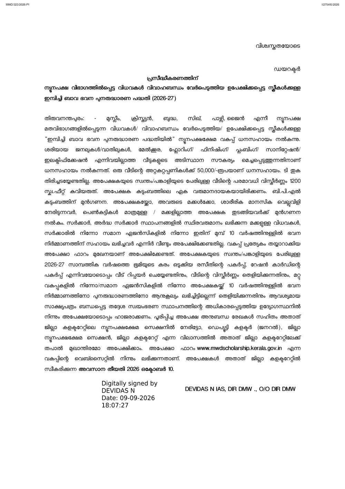
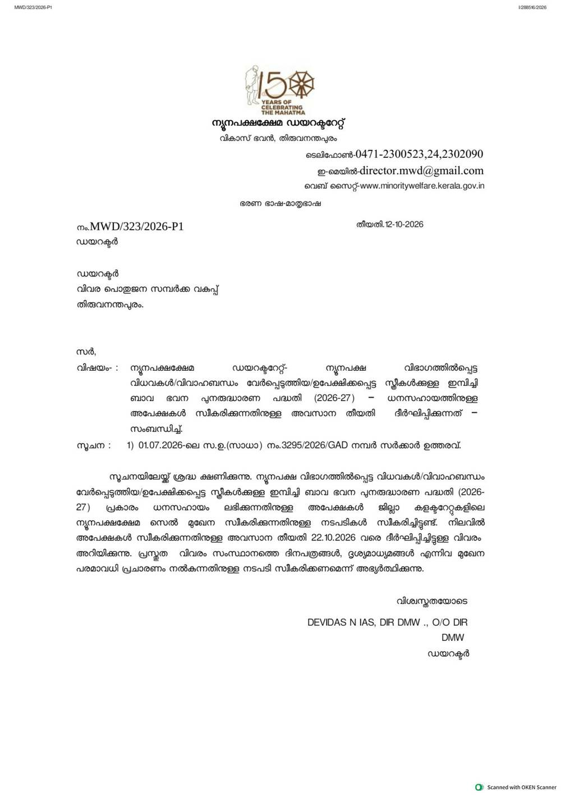

Imbichi Bava house renovation grant 2026-27: ₹50,000 for minority widows, divorced and abandoned women, apply by 22 October
Kerala's Directorate of Minority Welfare has extended the last date for the Imbichi Bava Bhavana Punarudharana Padhathi (house renovation scheme) 2026-27 to 22 October 2026. Widows, divorced women and abandoned women from minority communities can get up to ₹50,000 as a grant to repair their homes. Applications are offline, at the Minority Welfare Section of your District Collectorate.
Who can apply
- A widow, a divorced woman, or an abandoned (deserted) woman
- From the Muslim, Christian, Buddhist, Sikh, Parsi or Jain community
- The house is in her own name or her spouse's name, and its total area is not more than 1,200 sq ft
- She is the sole earning member of her family
BPL families get priority. The notice also gives priority to applicants or their daughters facing physical or mental challenges, and to families with only daughters.
Who cannot apply
- Widows receiving a welfare pension from the government or a quasi-government institution
- Anyone who received house construction assistance from the government or a similar agency in the last 10 years
What you get
Up to ₹50,000 per house, paid as a grant - no repayment. The assistance is for basic repairs that improve the home's facilities: doors and windows, roofing, plastering or finishing, plumbing, sanitation and electrification.
How to apply: step by step
Checked against the Directorate's official letters on 21 October 2026. This scheme is applied offline - there is no online submission.
- Download the official notice and application form from mwdscholarship.kerala.gov.in (the 9 September 2026 notice PDF includes the application form), or collect the form from the Minority Welfare Section of your District Collectorate.
- Fill the form: name, address, phone, age, religion and community, annual family income, ration card number, whether you are a widow, divorced or abandoned, and the house details (area, survey number, thandaper number, village, taluk, district, and the panchayat, municipality or corporation).
- Sign the self-declaration on the form: that you are a widow, divorced or abandoned woman, that you have not received any housing assistance so far, and that the house is below 1,200 sq ft.
- Attach all 10 documents listed below.
- Submit the filled form with documents directly at the Minority Welfare Section of your District Collectorate, or post it to Deputy Collector (General), District Minority Welfare Section, District Collectorate of your district, so that it reaches by 22 October 2026.


Documents to attach (all 10 are required)
- Ration card copy
- 2026-27 property tax paid receipt for the house in your own or your spouse's name
- Permanent residence certificate from your local body (panchayat, municipality or corporation)
- Husband's death certificate copy (for widows)
- Certificate proving you have not remarried
- Divorce or desertion proof certificate (if applicable)
- Certificate from the local body's authorised officer stating the house needs repair, with its area
- Certificate proving you have not received house construction or renovation assistance from any department or similar agency in the last 10 years
- Copies of medical documents, if you or your children face physical or mental challenges or serious illness (cancer, kidney, liver, heart disease or paralysis)
- A certificate explaining the difference, if your name on the ration card differs from the application
The notice is clear: applications that miss any required document will not be considered for this scheme.
Dates in the notices
- Original last date: 10 September 2026
- First extension: 10 October 2026
- Second and current extension: 22 October 2026
Video guides
Malayalam: Media Companion's explainer on the Imbichi Bava Bhavana scheme (9 September 2026, Malayalam captions) walks through who can apply and the documents. It was made before the two deadline extensions, so follow the 22 October 2026 date in the official letter, not any date the video mentions. English: we searched YouTube on 21 October 2026 and could not verify an English video that matches this scheme and cycle, so we are not linking one rather than risk wrong figures (one English-titled video claims Rs 5,00,000 - the official letter says Rs 50,000).
Questions
Directorate of Minority Welfare, Vikas Bhavan, Thiruvananthapuram. Phone: 0471-2300523, 0471-2300524, 0471-2302090. Email: director.mwd@gmail.com. The directorate's main website (minoritywelfare.kerala.gov.in) showed an "under maintenance" page when we checked on 21 October 2026; the notices and form are on the scholarship portal instead.
We read the Directorate's letters dated 9 September 2026 (scheme details and application form) and 12 October 2026 (deadline extension) on 21 October 2026, including viewing the scanned pages as images. Both are Malayalam PDFs on the official portal; we only used lines we could read clearly. We did not apply.
Sources: Directorate notice with scheme details and application form (PDF, 9 Sep 2026), Deadline extension letter (PDF, 12 Oct 2026), Minority Welfare scholarship portal. Checked 21 October 2026. This is an AiCoN explainer, not a government publication.